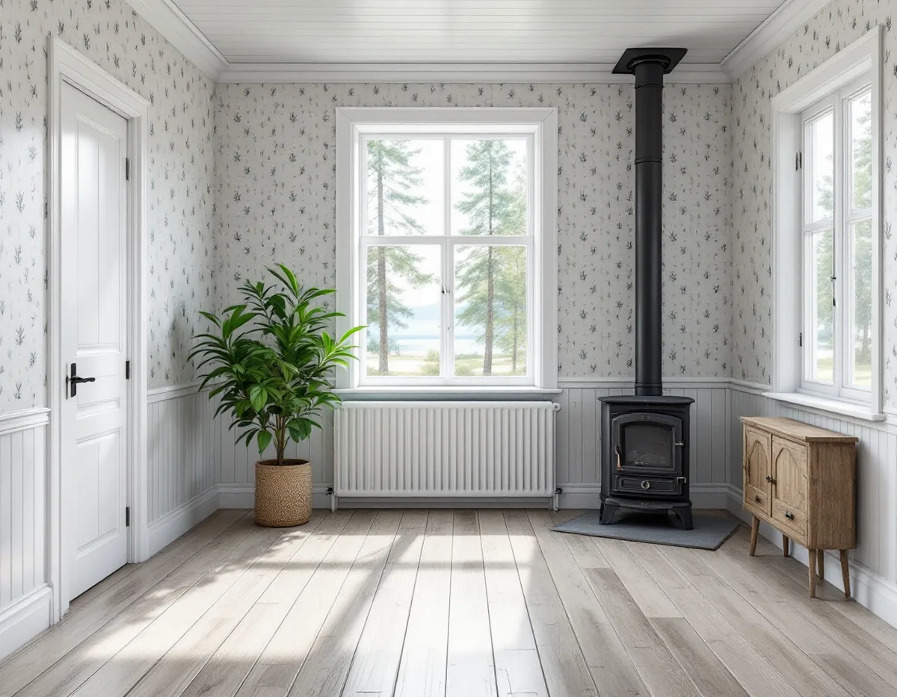
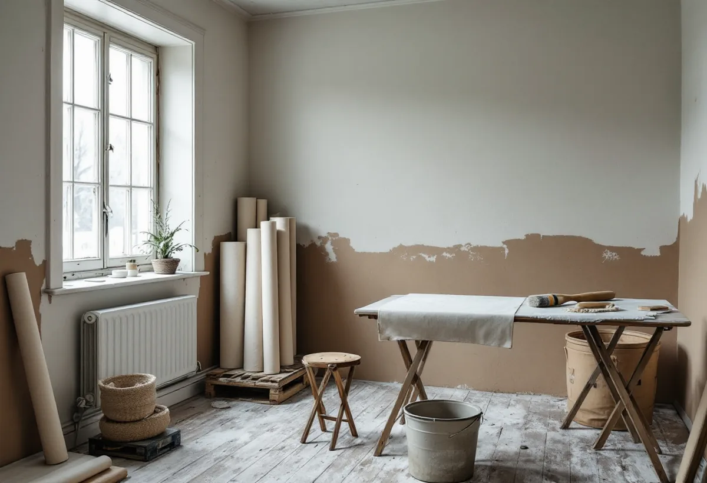

Platsbesök
Vi frågar hur huset värms, letar efter fuktfläckar och lyfter en kant av den gamla tapeten.

Många hus i Norrtälje kommun används bara delar av året.
Beskriv jobbet kort.
Något blev fel. Kontrollera uppgifterna eller ring 08 12 410 276.
Vi tittar på jobbet på plats innan du får offert.
Du ser vad som ingår och vad det kostar.
Vi drar av ROT direkt och sköter ansökan.
Geal Entreprenad AB, Bromma. Org.nr 559303-7566.

Där ska tapeten klara både kalla vintrar och varma somrar, och när stugan blir ett hem året om ändras villkoren igen. Geal Entreprenad AB tapetserar i fritidshus, villor och bostadsrätter i Norrtälje och börjar med att ta reda på hur huset värms och vädras.
Norrtälje kommun beskriver sig som en av Sveriges största landsbygdskommuner. Enligt kommunens sammanställning bor cirka 32 000 personer på landsbygden, och därtill finns drygt 26 000 fritidshus. Ungefär en fjärdedel av dem som använder fritidshusen vistas i kommunen större delen av året, och kommunen räknar därför med en landsbygdsbefolkning på minst 42 000–44 000 personer.
Det betyder att många hus pendlar mellan två lägen: stängda och svala under vintern, eller bebodda och uppvärmda nästan jämt. Tapeten påverkas av båda, och det är skälet till att vi frågar hur huset används innan vi föreslår underlag och tapet.
Svenska Byggnadsvårdsföreningen har fått frågan om ett enkelt trähus från 1965 kan få frysa under vintern. Svaret är att stommen och inredningen i trä nog klarar sig ganska bra, men att tapeter kan bli buckliga och metall oxidera. Textilier och stoppade möbler är mest utsatta. Svaret anger att en grundvärme på 5–7 grader normalt rekommenderas, och tipsar om en enkel hygrometer som visar om den relativa luftfuktigheten blir för hög och om några extra besök det första året för att se hur huset mår.
I ett liknande svar om en stuga från 1964 skriver föreningen att utkylningen kan ge mögel i textilier och tapeter som lossnar, och att stödvärme på 5–7 grader därför är det vanliga rådet. En målarmästare som skrivit föreningens artikel om underlag för tapetsering konstaterar att hög fuktighet i oeldade sommarhus brukar skada papperstapeter långsamt. Det syns som lösa skarvar, fuktfläckar och svarta prickar.
Kondens på väggar och innertak uppstår enligt föreningen när fuktig luft möter kalla ytor, och det är vanligt i kallställda hus med dålig ventilation. Den relativa luftfuktigheten bör inte ligga över 70–75 procent under längre perioder. Norrtälje kommun skriver på sin sida om inomhusmiljö att fukt- och mögelproblem kan ha flera orsaker, från fel när huset projekterades eller byggdes till att ventilationen i många bostäder inte är anpassad efter dagens vanor med dusch och tvätt.
Därför sätter vi inte upp ny tapet över fläckar vars orsak ingen känner till. Ser vi tecken på fukt beskriver vi vad vi sett, så att tak, grund eller ventilation kan ses över först.
När ett fritidshus ska bli året-runt-bostad kan det bli aktuellt att isolera ytterväggarna från insidan. Bakom en sådan isolering kan gamla tapeter finnas kvar. I ett fall som föreningen besvarat hade ytterväggarna i ett hus från 1890-talet isolerats inifrån på 1980-talet med regelverk, glasull, plast och gipsskivor, medan originalpappen med ett eller flera lager tapet satt kvar på timret bakom.
Föreningen beskriver valet som en fråga om autenticitet. Är huset skyddat, eller tycker du att det kulturhistoriska värdet är viktigt, är spännpappen och tapeterna alternativet. Den som väger mellan vägarna kan börja med att riva ut den sentida isoleringen och se i vilket skick väggen bakom är. I ett annat svar om ett timmerhus nämner föreningen att insidan kan få lerklining som målas eller tapetseras med papperstapeter, eller spännpapp i stället.
Själva isoleringen ingår inte i tapetseringen, men vi kan ta fram och dokumentera de tapeter som kommer i dagen. Gäller frågan fasadens färg finns mer under målare i Norrtälje.
Artikeln om underlag för tapetsering råder att hålla lokalen sval medan tapeten sätts upp och att vädra och värma när arbetet är klart. Har huset stått kallt planerar vi med dig när det ska vädras och värmas efter arbetet. Artikeln rekommenderar också att om möjligt spara en rulle eller en våd och anteckna tillverkare, tapetnummer och kulörnummer – numren antecknar vi åt dig, och överbliven tapet lämnas kvar.
Vi frågar hur huset värms, letar efter fuktfläckar och lyfter en kant av den gamla tapeten.
Finns tecken på fukt får du veta det innan vi föreslår någon ny tapet.
Underarbete och uppsättning står som separata poster.
Vi bestämmer tillsammans när huset ska vädras och värmas efter arbetet.
Våderna sätts upp i ett svalt rum som sedan vädras och värms.
Överbliven tapet lämnas till dig, med en lapp om tapetens nummer.
Skatteverket räknar tapetsering som rotarbete, både i permanentbostaden och i fritidshuset, så länge du äger huset och själv använder det. Bor någon annan permanent i ditt fritidshus räknas det inte längre som ett fritidshus du kan använda, och då ges inget avdrag.
Avdraget är högst 30 procent av arbetskostnaden och högst 50 000 kr per person och år, inom 75 000 kr för rot och rut tillsammans. Material och resor ger inget avdrag. Geal drar av beloppet direkt på fakturan.
Antalet rum, om gamla lager ska ner och hur mycket väggarna behöver lagas avgör mest. Efter ett gratis platsbesök får du ett skriftligt kostnadsförslag och en kontakt genom hela arbetet.
Fasad, fönster och invändig målning.
Målare i Stockholm →Takbyte, takbesiktning och plåtarbeten.
Takläggare i Norrtälje →Roslagen, skärgård och fritidshus.
Takrenovering i Norrtälje →Stugtomter, strandskydd och avlopp.
Attefallshus i Norrtälje →Fritidshus, WC-tillstånd och brunn.
Badrumsrenovering i Norrtälje →Nytt hus, förhandsbesked och egen brunn.
Byggföretag i Norrtälje →Ljust bostadshus och röda uthus.
Fasadmålning i Norrtälje →Bruksvillor, sommarvillor och Roslagens trähus.
Fasadrenovering i Norrtälje →Roslagens hus, bruksorter och bidrag i Norrtälje.
Fönsterbyte i Norrtälje →Gårdar, timmerhus och lösa innerbågar i Roslagen.
Fönsterrenovering i Norrtälje →Plankgolv i gamla gårdar och parstugor.
Golvläggare i Norrtälje →Från slipat eller lackat golv till skurgolv.
Golvslipning i Norrtälje →Gasolspis, vedspis och pentry i gäststugan.
Köksrenovering i Norrtälje →Takskydd, rännor och skorstensplåt i Norrtälje.
Plåtslagare i Norrtälje →Kust, snö och Roslagens tak.
Takbyte i Norrtälje →Trähus, fritidshus och kustlägen i Norrtälje.
Målare i Norrtälje →Fritidshus, altan och gäststuga.
Snickare i Norrtälje →Tidigare tillbyggnader, strand och frivilligt lov.
Tillbyggnad i Norrtälje →Egen brunn och eget avlopp.
Totalrenovering i Norrtälje →Eller ring 08 12 410 276, mån–fre 08–17.
Beskriv jobbet kort.
Något blev fel. Kontrollera uppgifterna eller ring 08 12 410 276.